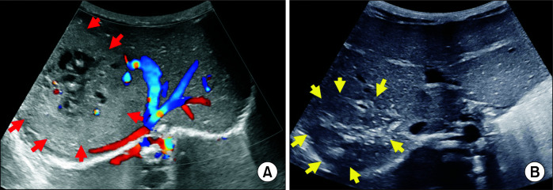
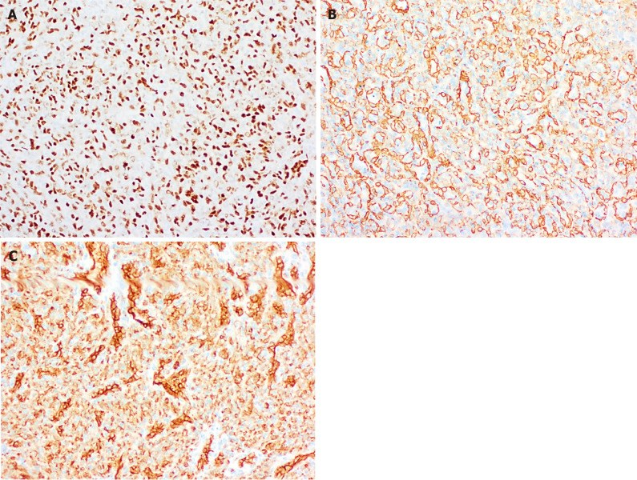
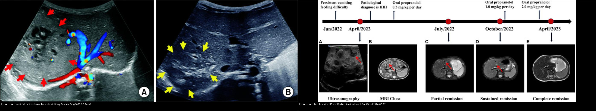
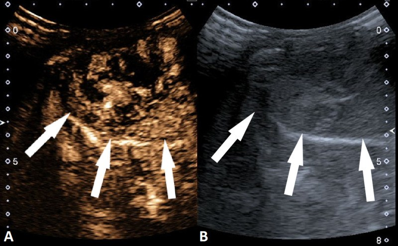
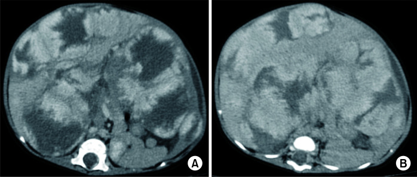
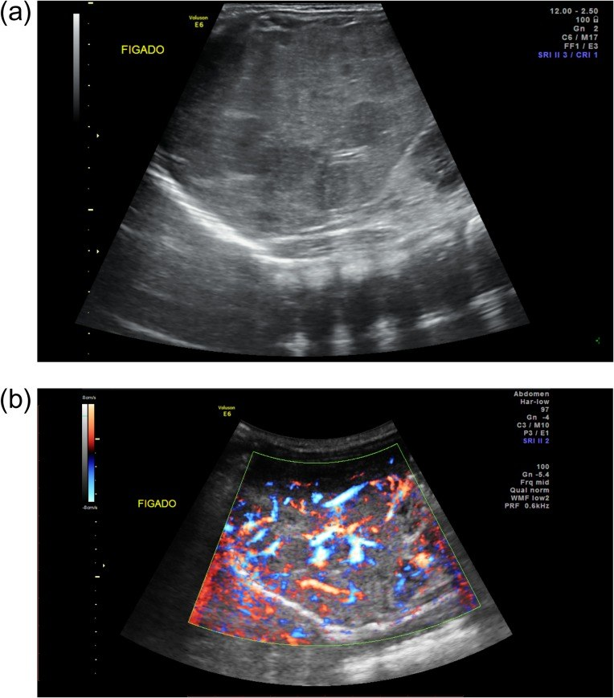
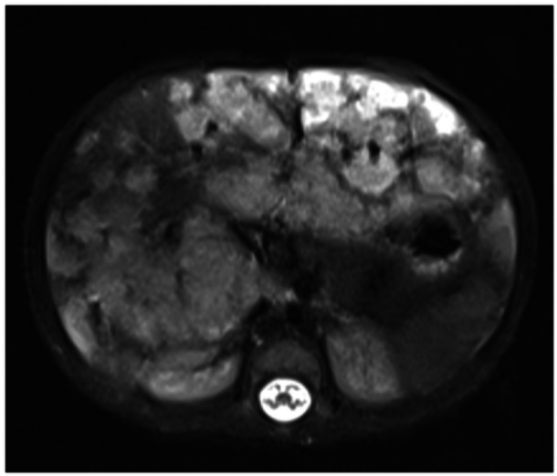
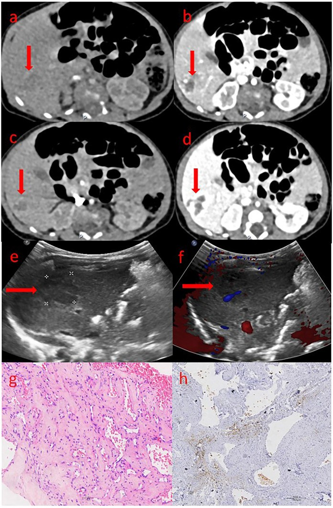

667 — U mạch máu gan ở trẻ: hemangioma khổng lồ, suy tim cung lượng cao & điều trị nội khoa / Infantile hepatic hemangioma & medical therapy
Tags: pattern:khoi-gan-nhi vung:gan score:ISSVA protocol:US-Doppler-CEUS-MRI-gan-nhi incidentaloma:khoi-gan-nhi
Mức chắc chắn (certainty): tổng hợp y văn (literature synthesis) — tổng hợp từ các review mạch máu gan nhi + ca nguyên văn có ảnh CC BY/BY-NC (ghi rõ PMCID từng ảnh); các ca minh họa là ca nguyên văn lấy từ bài gốc.
1. Tổng quan bệnh học – cơ chế hình ảnh
- U mạch máu gan (hepatic hemangioma) là khối u mạch máu lành tính hay gặp nhất ở gan nhũ nhi. ISSVA chia làm hai họ hoàn toàn khác nhau về sinh học và đáp ứng thuốc:
- U mạch máu bẩm sinh (congenital hemangioma — CHH): đã có đủ lúc sinh, không tăng sau sinh; ba thể theo diễn tiến — RICH (thoái triển nhanh), NICH (không thoái triển), PICH (thoái triển một phần). Mô học: GLUT-1 ÂM.
- U mạch máu nhũ nhi (infantile hemangioma — IHH): xuất hiện sau sinh vài tuần–vài tháng, có pha tăng sinh rồi pha thoái triển song song u mạch máu da. Mô học: GLUT-1 DƯƠNG (dấu ấn của nhau thai) — đây là chìa khóa phân biệt với CHH và là lý do IHH đáp ứng propranolol còn CHH thường không.
- TẠI SAO hình ảnh như vậy? IHH là hồ mạch máu chảy chậm — trên siêu âm là khối tăng hồi âm/không đồng nhất có mạch trong u (Doppler); trên CEUS và MRI động ngấm thuốc kiểu viền nốt ngoại vi không liên tục → đầy dần vào trung tâm (peripheral nodular discontinuous enhancement → centripetal fill-in) vì thuốc chảy chậm vào các hồ mạch, khác hẳn kiểu ngấm mạnh thì động mạch của u ác. Trên T2W u sáng mạnh (nhiều nước), T1W tối, sau tiêm ngấm dần.
- Cơ chế biến chứng (vì sao u lành vẫn có thể giết người):
- Suy tim cung lượng cao (high-output cardiac failure): do shunt động–tĩnh mạch trong u khổng lồ/lan tỏa — tim bơm lưu lượng lớn. Ca nguồn ghi gradient xuyên mạch phổi đỉnh 18 mmHg trước điều trị, giảm nhanh sau propranolol.
- Suy giáp tiêu thụ (consumptive hypothyroidism): nội mô u tăng biểu hiện enzym type 3 deiodinase (D3) phá hủy T4/T3 → suy giáp nặng, nếu không thay hormone đủ sẽ hại phát triển thần kinh. Tổng quan 64 ca (2000–2023): 59,37% dùng propranolol (52,63% đơn trị); 92,85% cần LT4; nhóm propranolol cần liều LT4 thấp hơn.
- Hội chứng khoang bụng (abdominal compartment syndrome), thiếu máu/giảm tiểu cầu, suy gan — gặp trong thể lan tỏa (diffuse IHH) gần như thay hết nhu mô gan.
- Ngưỡng định lượng / phân loại bắt buộc: theo số ổ — khu trú (focal, 1 ổ) / nhiều ổ (multifocal, ≥ 2 ổ) / lan tỏa (diffuse, vô số ổ thay gần hết nhu mô); số đo trong ca minh họa: US ổ trung bình 15 mm, MRI tổn thương tối đa 20 mm (Bettini 2025, PMC12186321).
- Vai trò AFP: giúp loại u ác (hepatoblastoma) nhưng AFP cao sinh lý trong 6 tháng đầu nên không dùng để khẳng định ác tính ở nhũ nhi.


2. Mẫu hình + chẩn đoán phân biệt theo số lượng ổ (gamut)
- Một ổ (focal) ở nhũ nhi: u mạch máu bẩm sinh (RICH/NICH — GLUT-1 âm, thường không đáp ứng propranolol), IHH khu trú (GLUT-1 dương), hepatoblastoma (khối đặc + AFP rất cao), u mô đệm lành (mesenchymal hamartoma) (nhiều nang).
- Nhiều ổ (multifocal): IHH nhiều ổ (kèm u mạch máu da), di căn gan của neuroblastoma (khối nguyên phát thượng thận + vôi hóa lấm tấm), hepatoblastoma nhiều ổ, u nội mô mạch máu (epithelioid hemangioendothelioma — hiếm ở trẻ).
- Lan tỏa (diffuse — vô số ổ thay gần hết nhu mô): IHH lan tỏa — nhóm nguy hiểm nhất, luôn kèm bộ ba biến chứng suy tim cung lượng cao + suy giáp tiêu thụ + thiếu máu/khoang bụng.
- Gợi nhớ “khối mạch máu gan nhi”: B — Bẩm sinh (CHH, GLUT-1 âm, không đáp ứng) vs I — IHH (GLUT-1 dương, đáp ứng propranolol); 1 ổ hẹp = lành hơn; lan tỏa = nguy hiểm nhất.
- Bối cảnh chốt: trẻ non tháng/thiếu máu không rõ + một ổ gan tăng mạch → nghĩ IHH (CEUS là chìa khóa khi MRI không loại được hepatoblastoma). Trẻ có u mạch máu da kèm nhiều ổ gan → IHH nhiều ổ.
3. Bảng so sánh phân biệt (ma trận đối chiếu)
| Thực thể (entity) | Hình ảnh điển hình (US/CEUS/MRI) | Chốt vào (rule-in) | Chốt loại (rule-out) | Gợi ý xác nhận |
|---|---|---|---|---|
| U mạch máu nhũ nhi (IHH) | US: khối tăng hồi âm/không đồng nhất có mạch; CEUS/MRI: ngấm viền nốt không liên tục → đầy dần trung tâm; T2 sáng mạnh | Xuất hiện sau sinh + tăng rồi thoái triển + GLUT-1 dương + ngấm viền đầy dần | Đứng yên từ lúc sinh + không đáp ứng propranolol → nghĩ CHH; ngấm động mạch rồi thải thuốc + AFP rất cao → nghĩ hepatoblastoma | US Doppler + CEUS; TSH/fT4; AFP; MRI động |
| U mạch máu bẩm sinh (CHH: RICH/NICH/PICH) | Có đủ lúc sinh, không tăng; US: mạch to, có thể thoái triển nhanh (RICH); MRI: tín hiệu không đồng nhất, vôi hóa gặp ở thể bẩm sinh | Khối đã có lúc sinh + không tăng theo thời gian + GLUT-1 ÂM | Xuất hiện/tăng sau sinh → IHH (đáp ứng propranolol) | Theo dõi diễn tiến; mô học GLUT-1 khi cần |
| U nguyên bào gan (hepatoblastoma) | Khối đặc không đồng nhất, hoại tử, vôi hóa thô 40–50%, xâm lấn nhiều phân thùy | 6 tháng–5 tuổi + AFP > 10.000 ng/mL + vôi hóa thô | AFP bình thường + ngấm viền đầy dần → nghĩ u mạch máu | AFP, MRI đa thì, PRETEXT (bài 665) |
| U mô đệm lành (mesenchymal hamartoma) | Khối nhiều nang có vách xen mô đặc, ngấm ít | Nhũ nhi < 18 tháng + nhiều nang + AFP bình thường | Khối đặc hoàn toàn + AFP rất cao → hepatoblastoma | US + MRI |
| Di căn gan neuroblastoma | Nhiều nốt trong gan + khối thượng thận nguyên phát, vôi hóa lấm tấm | Khối thượng thận + vôi hóa + catecholamine (VMA/HVA) | Vô số ổ thay gần hết nhu mô + suy giáp → IHH lan tỏa | US bụng, MIBG, VMA/HVA |

Dấu hiệu chốt cần đọc đúng trên từng kỹ thuật
- CEUS (siêu âm cản quang): chìa khóa khi MRI không loại được hepatoblastoma — thấy ngấm viền nốt ngoại vi ở giây thứ 8–10, rồi những giây tiếp theo đầy dần toàn bộ tổn thương ở thì động mạch muộn. Kiểu này gần như loại u ác.
- US Doppler: khối tăng hồi âm/không đồng nhất, có mạch trong u; thể lan tỏa là vô số nốt hồi âm kém/đồng âm rải khắp gan + gan to.
- MRI: T2 sáng mạnh, T1 tối, sau tiêm ngấm viền nốt rồi đầy dần; T2 là chuỗi nhạy nhất để thấy các nốt nhỏ khi thể lan tỏa.


4. Protocol chụp + phác đồ điều trị nội khoa
- Protocol hình ảnh: (1) US bụng + Doppler đầu tay — khối đặc/tăng mạch, gan to; (2) CEUS khi cần phân biệt với hepatoblastoma (ngấm viền nốt → đầy dần); (3) MRI gan (T1/T2 fat-sat, DWI/ADC, động học sau tiêm) khi lan tỏa/cần bản đồ tổn thương; (4) CTA/MRA khi nghi shunt mạch lớn hoặc trước can thiệp.
- Đánh giá biến chứng bắt buộc trước điều trị: siêu âm tim (suy tim cung lượng cao), TSH/fT4/fT3 (suy giáp tiêu thụ), công thức máu (thiếu máu/giảm tiểu cầu), AFP, chức năng gan, đo vòng bụng/áp lực khoang bụng khi lan tỏa.
- Phác đồ nội khoa:
- Propranolol = điều trị đầu tay cho IHH có biến chứng/nhiều ổ/lan tỏa. Ca nguồn tăng liều 0,5 mg/kg/ngày → 2 mg/kg/ngày; khởi đầu liều thấp, tăng dần, theo dõi nhịp tim–huyết áp–đường huyết (hạ đường huyết ở nhũ nhi nhỏ, đặc biệt khi bú kém).
- Bổ sung prednisone cho thể lan tỏa: RCT đa trung tâm (Lan 2026, PMC13433490, n = 45) — tuần 4 đáp ứng tổn thương 91,3% (propranolol + prednisone) vs 59,1% (propranolol đơn trị), khác biệt 32,2% (KTC 95% 6,9–53,5%), P = 0,007; tháng 6 đáp ứng thể tích 91,3% vs 63,6% (P = 0,026); không có biến cố nặng độ 3–4.
- Kháng trị: sirolimus, nút mạch (hepatic artery embolization), phẫu thuật, hoặc ghép gan khi suy gan/suy tim không kiểm soát.
- Suy giáp tiêu thụ: thay LT4 liều cao, giảm dần khi u thoái triển (ca nguồn propranolol giúp bình thường hóa giáp sau 2 tuần, có ca không cần LT4).
- Sơ đồ tiếp cận khối mạch máu gan ở trẻ:
flowchart TD
A[Khối mạch máu gan ở trẻ] --> B{Có đủ lúc sinh, không tăng?}
B -->|Có| C[CHH: RICH/NICH — GLUT-1 ÂM — thường không đáp ứng propranolol]
B -->|Không: xuất hiện/tăng sau sinh| D[IHH — GLUT-1 DƯƠNG — đáp ứng propranolol]
D --> E{Kiểu phân bố}
E -->|Khu trú| F[Theo dõi nếu không biến chứng]
E -->|Nhiều ổ / lan tỏa| G[Đánh giá biến chứng: siêu âm tim, TSH/fT4, công thức máu, AFP, chức năng gan]
G --> H{Có biến chứng?}
H -->|Không| F
H -->|Có| I[Propranolol 0,5 → 2 mg/kg/ngày, tăng dần + theo dõi tim/HA/đường huyết]
I --> J{Đáp ứng sau 4 tuần?}
J -->|Có| K[Tiếp tục tới thoái triển, giảm dần rồi ngừng]
J -->|Không, thể lan tỏa| L[Thêm prednisone ngắn ngày]
L --> M{Còn kháng trị?}
M -->|Có| N[Sirolimus / nút mạch / phẫu thuật / ghép gan]
5. Biến thể bình thường và cạm bẫy
- AFP cao sinh lý 6 tháng đầu → AFP tăng nhẹ ở nhũ nhi không đủ khẳng định ác tính; đánh giá theo động học + hình thái.
- CHH không đáp ứng propranolol → đừng tăng liều vô ích; theo dõi diễn tiến (RICH tự thoái triển, NICH đứng yên).
- “Lành” không đồng nghĩa “vô hại”: thể lan tỏa có thể gây suy tim cung lượng cao, suy giáp tiêu thụ, hội chứng khoang bụng, suy gan — báo cáo ca tử vong trong thể CHH khổng lồ kèm suy tim sung huyết dù đã nút mạch.
- Bỏ sót suy giáp tiêu thụ: biểu hiện ban đầu có thể chỉ là thiếu máu + tăng transaminase/GGT hoặc suy giáp khởi phát muộn → luôn xét nghiệm tuyến giáp ở mọi trẻ có IHH.
- Kasabach–Merritt (giảm tiểu cầu tiêu thụ) KHÔNG điển hình ở IHH — nhóm này gắn với u nội mô mạch máu Kaposi (KHE); đừng gán nhầm.
- Cạm bẫy mặt cắt: “khối gan” ở trẻ nhỏ có thể là thùy gan biến dạng do chèn ép hoặc giả khối do nhịp thở trên US — đối chiếu MRI trước khi kết luận; nhiều nốt gan phải phân biệt di căn neuroblastoma (tìm khối thượng thận + VMA/HVA).

6. Tự lượng giá — Blind Quiz
Ca 1 — Bé gái non tháng 10 ngày, thiếu máu dai dẳng không rõ nguyên nhân. Đọc siêu âm và CEUS.
- Gợi ý lâm sàng: nhũ nhi non tháng, thiếu máu; MRI chưa loại được hepatoblastoma.
- Câu hỏi: Kiểu ngấm thuốc là gì? Nó nói lên điều gì? Chẩn đoán?
Bấm để hiện đáp án (findings + chẩn đoán)
- Dấu hiệu (findings): CEUS — ngấm viền nốt ngoại vi ở giây thứ 8, rồi đầy dần vào trung tâm các thì sau; đối chiếu US thang xám (B) thấy tổn thương không tăng hồi âm rõ.
- Chẩn đoán (diagnosis): u mạch máu gan nhũ nhi (IHH) — kiểu ngấm viền nốt rồi đầy dần là chốt loại u ác, giúp tránh sinh thiết/phẫu thuật không cần thiết khi MRI không phân định được.
- Nguồn ảnh: Sekej M et al., Cureus 2020 (PMC7478462, Fig. 3), CC BY 4.0.
Ca 2 — Bé trai 2 tháng, gan to, thiếu máu + tăng transaminase. Đọc MRI T2.

- Gợi ý lâm sàng: nhũ nhi, chưa rõ nguyên nhân suy giáp/thiếu máu.
- Câu hỏi: Mẫu hình phân bố? Cần xét nghiệm gì bắt buộc? Biến chứng hay đi kèm?
Bấm để hiện đáp án (findings + chẩn đoán)
- Dấu hiệu (findings): vô số nốt T2 sáng mạnh rải khắp các thùy gan, gan to — mẫu hình lan tỏa (diffuse IHH); US trước đó (Fig. 2) cho thấy các nốt hồi âm kém, đường kính trung bình 15 mm.
- Chẩn đoán (diagnosis): u mạch máu gan nhũ nhi lan tỏa (diffuse IHH). Bắt buộc xét nghiệm TSH/fT4 (suy giáp tiêu thụ do D3), công thức máu (thiếu máu), AFP, siêu âm tim (suy tim cung lượng cao). Điều trị: propranolol (trong ca nguồn giúp giảm u và bình thường hóa giáp sau 2 tuần).
- Nguồn ảnh: Bettini I et al., Ital J Pediatr 2025 (PMC12186321, Fig. 3), CC BY 4.0.
Ca 3 — Bé gái IHH nhiều ổ nhập viện vì suy tim sung huyết, chậm tăng trưởng. So sánh siêu âm trước và sau điều trị.

- Gợi ý lâm sàng: suy tim cung lượng cao + gan to + chậm tăng cân.
- Câu hỏi: Điều trị gì? Kết quả ra sao? Theo dõi tim bằng số nào?
Bấm để hiện đáp án (findings + chẩn đoán)
- Dấu hiệu (findings): siêu âm trước điều trị: nhiều ổ mạch máu trong gan; sau propranolol: thoái triển rõ rệt; MRI nền có nhiều ổ ngấm gần khắp nhu mô. Gradient xuyên mạch phổi đỉnh 18 mmHg trước điều trị, giảm nhanh và duy trì cải thiện qua 8 tháng.
- Chẩn đoán (diagnosis): IHH nhiều ổ có suy tim cung lượng cao — điều trị propranolol là đầu tay, hiệu quả và dung nạp tốt; cải thiện cả lâm sàng lẫn hình ảnh.
- Nguồn ảnh: Ateeqi FA et al., JPGN Reports 2026 (PMC13398648, Fig. 1), CC BY-NC-ND (giữ nguyên gốc, không chỉnh sửa/ghép).
Ca 4 — Trẻ sơ sinh có khối gan đã thấy từ lúc sinh, không tăng theo thời gian. Đọc bộ ảnh đa phương thức.

- Gợi ý lâm sàng: khối gan bẩm sinh, đã có đủ lúc sinh.
- Câu hỏi: Hình thái CT/siêu âm/mô học? Đây là họ u nào (bẩm sinh hay nhũ nhi)? Vì sao điều trị khác?
Bấm để hiện đáp án (findings + chẩn đoán)
- Dấu hiệu (findings): CT (a–d) 4 thì — khối có phần ngấm; siêu âm (e–f) — khối và mạch máu trong u; mô học (g–h) — mạch máu lành, không ác tính.
- Chẩn đoán (diagnosis): u mạch máu gan bẩm sinh (congenital hepatic hemangioma) — thuộc họ CHH (GLUT-1 âm), và vì thường không đáp ứng propranolol, xử trí thiên về theo dõi/thoái triển tự nhiên; chỉ can thiệp khi có biến chứng (trong báo cáo 12 ca CHH: 8 ca mổ, 3 ca dùng thuốc, 1 ca khổng lồ kèm suy tim sung huyết nút mạch nhưng tử vong).
- Nguồn ảnh: Wei Y et al., Front Pediatr 2025 (PMC12066750, Fig. 2), CC BY 4.0.
Ca 5 — Bé trai sơ sinh khám vì hẹp môn vị, tình cờ phát hiện gan bất thường trên siêu âm. Đọc siêu âm và MRI.
- Gợi ý lâm sàng: phát hiện tình cờ, trẻ bú tốt, chưa có triệu chứng tim.
- Câu hỏi: Trái/phải khác nhau ở điểm nào (số ổ + diễn tiến)? Ca tình cờ cần làm gì tiếp?
Bấm để hiện đáp án (findings + chẩn đoán)
- Dấu hiệu (findings): trái — một khối mạch máu khu trú (u bẩm sinh, có mạch trong u); phải — nhiều ổ lan tỏa, chuỗi ảnh cho thấy thoái triển dần theo thời gian (US + MRI).
- Chẩn đoán (diagnosis): khu trú (congenital/focal) vs lan tỏa (diffuse IHH). Với ca phát hiện tình cờ, dù không triệu chứng vẫn phải đánh giá biến chứng định kỳ (tim, tuyến giáp, công thức máu) vì lan tỏa có thể diễn tiến nặng; thể bẩm sinh RICH tự thoái triển.
- Nguồn ảnh: ghép từ ảnh trái — Sarangi S et al., Ann Hepatobiliary Pancreat Surg 2023 (PMC10700950, Fig. 3), CC BY-NC; ảnh phải — Li Z et al., Front Oncol 2024 (PMC10859491, Fig. 1), CC BY 4.0. Ảnh ghép letterbox giữ tỷ lệ.
Bài liên quan chéo
- 600 – Tổng quan Hệ Nhi khoa (bảng DDx khối gan nhi)
- 665 – Khối u gan ở trẻ em (hepatoblastoma, hemangioma, hamartoma, HCC) (gamut theo tuổi, PRETEXT)
- 630 – U bụng nhi: neuroblastoma vs Wilms (di căn gan)
- 122 – U lành & áp-xe gan (hemangioma người lớn)
- 615 – Viêm phổi nhi (nhóm bệnh nhi, không liên quan trực tiếp)
Ảnh
- Tên file
667_u-mach-mau-gan-nhi_<Modality>_PMC...; nguồn + giấy phép từng ảnh trongimages/CREDITS.md. - Ảnh CC BY / CC BY-NC: được ghép đối chiếu (
composite_khu-tru-bam-sinh-vs-lan-toa-nhu-nhi.jpg). Ảnh CC BY-NC-ND (PMC13398648) giữ nguyên bản, không crop/ghép. - Không tải Google Images / AuntMinnie; nguồn đóng chỉ dẫn link tại
sources.md.
Không dùng để chẩn đoán độc lập khi chưa có người hướng dẫn.